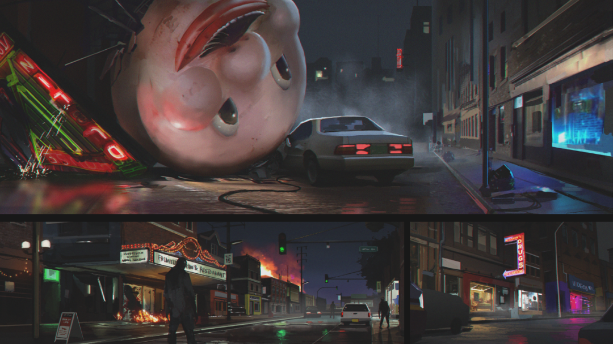
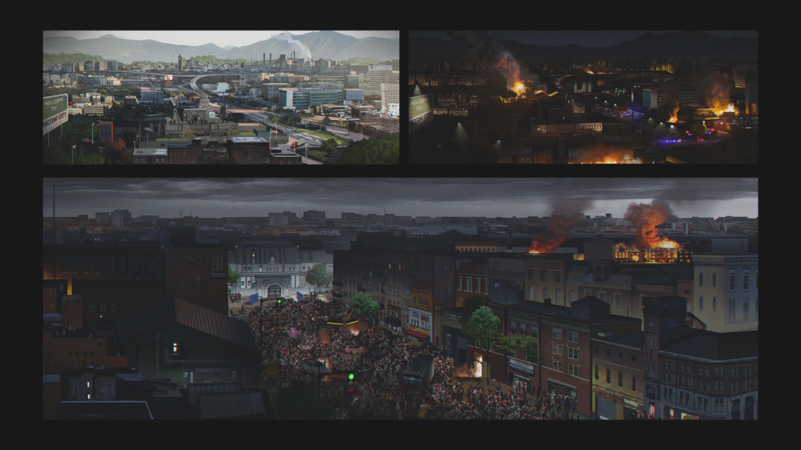
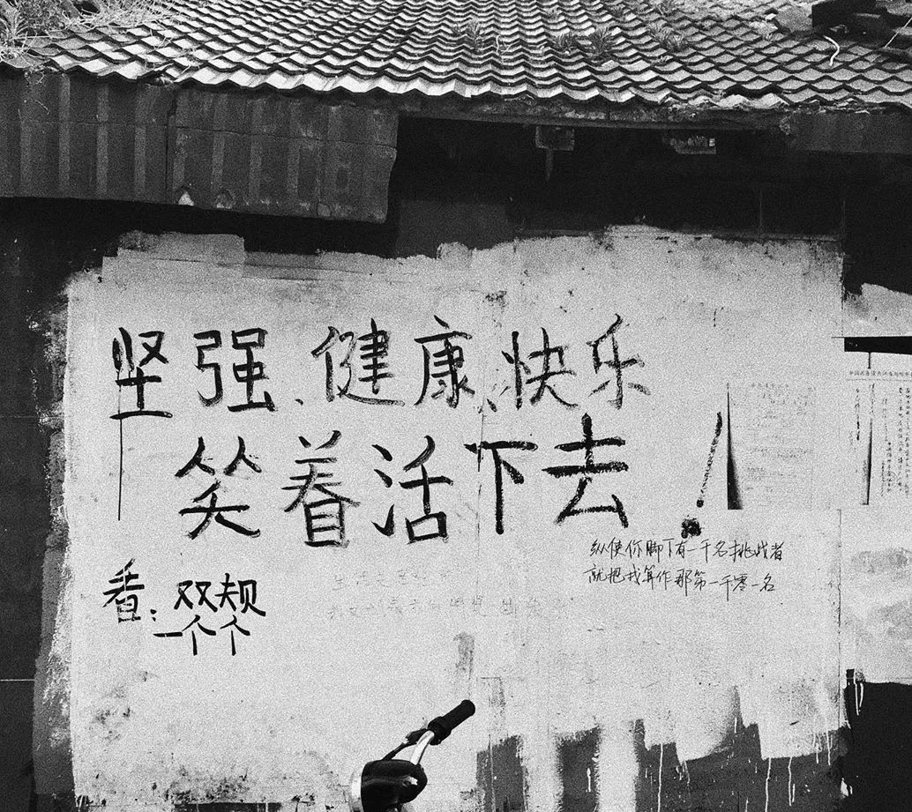
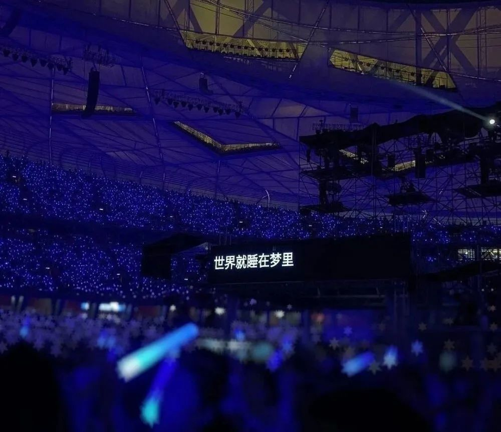
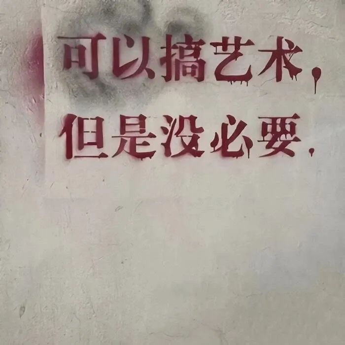

上周末晚上觉得要锻炼一下左右脑协调能力，于是开始玩生化危机Resident Evil 3，玩了半个小时就觉得，还不如去网上看别人玩的。不到一个小时，就被一些设定恶心到了。



歌词里写的：等到分不清季节更替。没有季节更替的时候，也能算分不清吗？是分不清，还是真的没有，这两个虽然不同但是不同得重要吗？
小时候，我指的是义务教育阶段，大概问一点什么就会触及到被问者的知识边界。然后就会得到一些答复“钻牛角尖”什么的。“也有一些比较大的困扰，比如说到底是拿诺贝尔化学奖还是拿物理学奖……现在终于可以每天都做实验了，但也没有当时那种新鲜感了。就像一本心心念念的书，买回家的时候就是它开始吃灰的时候。普通人一生不仅天赋平平，颜值普通，才华有限，连真正很大的困难都轮不到，大都是平平稳稳。”
终于到了需要我去把每一个边边角角摸清楚的时候。当我想去把这个边角摸清楚的时候，比如最近遇到的一个VA族元素外层电子轨道为什么算出来有一个费米能级以上的反键逆占据，就应该是由我来把这个问题处理清楚。尽管我现在并不知道为什么，但终于不算“钻牛角尖”，至少从意义上来说我在举起旗帜往无人区再进一步。去求证了一下，朋友答的这个问题是“人为什么需要努力”。对抗虚无这种说法，大概放到三年前可能对我还有点用。现在觉得虚无就虚无呗。写实的话剧，如果是《呼吸》这种反复对话的可能我还会去看一看；其他的，先锋戏剧可能是最容易遮盖下那些不足的。
我在某些情况下打断别人说话，其实是折中之举。因为我实际上想的是把人家的腿打断
冰箱里冷藏了15个昨天晚餐买的饺子。晚餐买并不是因为晚餐想吃，而是打算留给昨晚宵夜。昨晚并没有吃，今天也吃了中餐和晚餐。在想饺子如果不吃会不会坏掉但这已经不仅仅是饺子会不会坏的问题。坏掉的饺子可能会让人不适甚至生病。以我现在的情况，是生不起病的钱和时间都。把文字打完之后再把每个句子里的 我 字删掉。怕饺子坏掉怕很多东西坏掉怕延迟满足带来的是没有期待最近的状态还可以。也不都会在躁期和郁期振荡徘徊曲伏不定。我觉得还好只是偶尔会出那么一两个小时。朋友们也挺好的，老师也挺好的除了只在网上见我，服务生清洁工也很友善虽然东西贵但是均价如此不是针对我一个人。已经够好了。但是大工的学生也不是因为生活不好而过不下去。我还过得下去。
如果没有日历，我根本想不起来今天几月几号。因为每天都差不多，今天和昨天和明天有区别吗？课题像在推进，而我只在老去和耗竭经历的一天天日渐脱发。
自己和自己开辩论会也蛮有意思的。最近想给自己采购一点东西来，没想到供货商比我还不积极，还得我去催供货商才能催得来proposal要是放在国内早就来加上我的微信然后朋友圈什么的有事没事问问我还需不需要更多的产品。发点不讨人厌的广告，深夜骂骂老板之类。
不知道今年我听得最多的年度歌手是在哪几个当中产生: the Painter画家, the fin., 还潮还是福禄寿FloruitShow, Molly Nilsson, cuco, 窦唯。应该不出这几个。
“无法测量的性质无需存在，测量是主动扰动系统的过程。”




